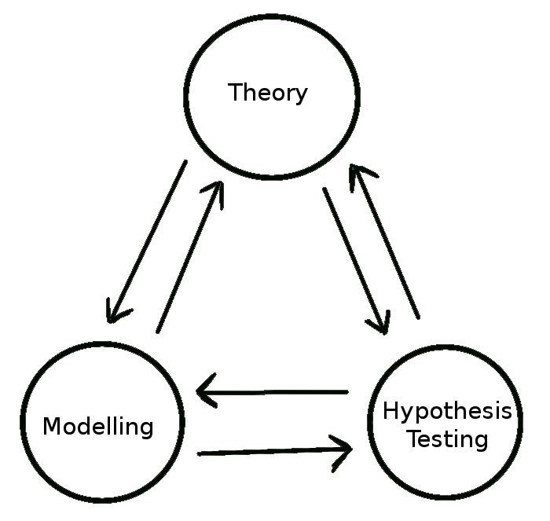
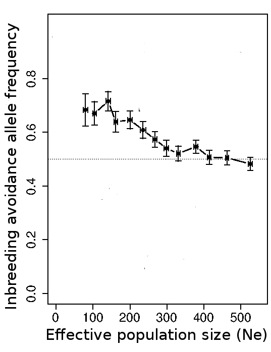
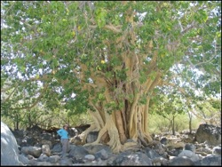
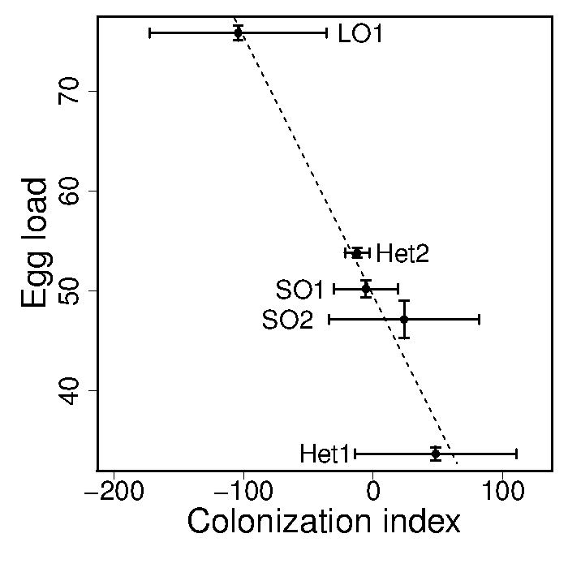

Overview of research
My research takes an integrative approach to addressing ecological and evolutionary questions through the development of theory [e.g., 1, 2], empirical hypothesis testing [e.g., 3, 4], and mathematical and computational modelling [e.g., 5, 6]. To address theoretical questions, I synthesise and expand upon general biological concepts to explore new ways of thinking about biological systems and discover how key biological assumptions can generate new biological predictions. My empirical work integrates theory by applying these general concepts and predictions to specific biological systems, drawing from theory to propose and test new biological hypotheses. The development and use of models is central to addressing questions in all aspects of my research, and much of the integration between theory and empirical research that I do is accomplished through the use of individual-based models (IBMs). By simulating biological systems using IBMs, it is possible to more accurately represent the complexity that exists in real-world populations and communities (e.g., stochasticity, spatial structure, or family history), and thereby explore how general theoretical concepts might or might not be inferred from biological patterns.
Currently, as part of the ConFooBio project, I am working to develop a general social-ecological model that integrates game theory and ecological theory to resolve conflicts between biodiversity conservation and food security. I have also worked to develop new theory on the evolutionary ecology of inbreeding, and the link between inbreeding, polyandry (female multiple mating), and parental investment. My doctoral work focused on developing and testing theory concerning species interactions on ephemeral resources patches.
[2] Duthie, AB, et al. (2016a) Proc. R. Soc. B. 282:20161845.
[3] Duthie, AB, et al. (2015) Am. Nat. 186:151-158.
[4] Duthie, AB & JD Nason (2016) Oikos 125:1597-1606.
[5] Duthie, AB & Reid (2016) Am. Nat. 188:651-667.
[6] Duthie, AB et al. (2016b) Evolution 70:1927-1943.
Inbreeding theory and modelling
Inbreeding is widely known to have deleterious fitness effects for inbred offspring (termed ''inbreeding depression''). As a result, it is widely presumed that inbreeding avoidance will evolve as an adaptation to avoid the negative fitness consequences of inbreeding, especially in populations in which inbreeding is obligately biparental. But biparental inbreeding theory also predicts an intrinsic benefit of inbreeding, which stems from an increased relatedness between parents and inbred offspring. This elevated parent-offspring relatedness increases the probability that identical-by-descent alleles will be transmitted from parents to offspring, and therefore that alleles underlying inbreeding will increase in frequency. Whether or not inbreeding is predicted to be adaptive depends on a balance between increased relatedness between parents and offspring, and the reduced fitness of those offspring. Most biparental inbreeding models isolate the effect of natural selection on inbreeding behaviour, and consider populations with highly simplified relatedness structures [7]. My modelling shows that when other evolutionary processes (i.e., genetic drift, mutation) are included in addition to natural selection, genetic drift strongly affects the dynamics of alleles underlying active inbreeding avoidance, even if inbreeding depression is severe [5]. When populations are large and panmictic, selection for inbreeding avoidance is weak because the risk of inbreeding is low, but when populations are small and inbreeding risk is high, selection for inbreeding avoidance is often overwhelmed by the stochastic effects of genetic drift. Additionally, while inbreeding avoidance is often hypothesised to cause selection for female multiple mating (termed ''polyandry''), my modelling shows that given the kinds of realistic relatedness structures observed in wild populations, this hypothesis only applies under some conditions [6]. Further, the magnitude to which females adjust the degree that they inbreed is always predicted to be small and difficult to accurately detect in wild populations.
[6] Duthie, AB et al. (2016b) Evolution 70:1927-1943.
[7] Duthie, AB & JM Reid (2015) PLoS One 10:e0125140.
Species interactions on ephemeral patch resources
Most organisms are not distributed uniformly or randomly in their environment. The positions and movement patterns of organisms are influenced by both biotic and abiotic factors, and these factors in turn can affect the ecology and evolution of species within a community. One focus of my research is on the effect that spatio-temporal processes have on the evolution and ecology of species that compete for ephemeral patch resources, such as the many species of insects that lay their eggs and whose larvae compete for resources on dung, carrion, fungi, or fruit. Using numerical and individual-based modeling techniques [8], my research develops coexistence theory by demonstrating that a trade-off between dispersal ability and fecundity can cause a change in species' competitive dominance when the distance to the nearest available resource patch varies in time. Better dispersers are competitively superior when the required travel distance to the next patch resource is farther away, and high fecundity is favoured when the nearest patch is nearby. With varying patch distance, long term coexistence is possible if a subset of each population is stored in patches of developing larvae over multiple generations [1]. This storage effect is a necessary component of coexistence, and my research suggests that even relatively short periods of population storage can facilitate coexistence given rapid environmental change. To test key hypotheses generated by my theory, I collected data from a community of nonpollinating fig wasps in Baja, Mexico (see here for travel log, pictures, and videos). This community includes five species that all appear to compete for access to the developing flowers of the Sonoran Desert rock fig (Ficus petiolaris), where females lay their eggs. Empirical tests of my theory from field work show a clear tradeoff between species dispersal-abilities and fecundities, which ultimately predict species distributions among ephemeral patch resources [3,4].
[1] Duthie, AB, et al. (2014) Am. Nat. 183:826-841.[3] Duthie, AB, et al. (2015) Am. Nat. 186:151-158.
[4] Duthie, AB & JD Nason (2016) Oikos 125:1597-1606.
[8] Duthie, AB & MR Falcy (2013) Ecol. Modell. 251:260-270.


Frequencies of a mutant allele underlying inbreeding avoidance after 3,000 generations across replicate simulations of an individual-based model with different effective population sizes. Each point represents a mean over 100 replicate simulations with identical starting conditions. Error bars show standard errors, and the dotted line indicates the allele frequency expected given no selection (0.5; [see 5]).

Mature Sonoran desert rock fig (Ficus petiolaris).

Trade-off between fecundity and colonisation in five competing fig wasp species [3].